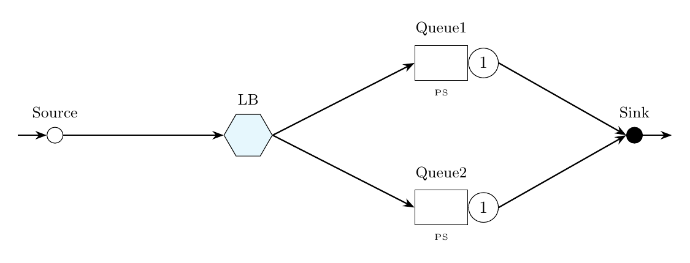

Tutorial 4: Round-Robin Load Balancing
This example considers a system of two parallel processor-sharing queues and studies the effect of load-balancing on the average performance of an open class of jobs. A Router node controls the routing using different strategies (random, round-robin).

% Example 4: Round robin load balancing
model = Network('RRLB');
source = Source(model, 'Source');
lb = Router(model, 'LB');
queue1 = Queue(model, 'Queue1', SchedStrategy.PS);
queue2 = Queue(model, 'Queue2', SchedStrategy.PS);
sink = Sink(model, 'Sink');
oclass = OpenClass(model, 'Class1');
source.setArrival(oclass, Exp(1));
queue1.setService(oclass, Exp(2));
queue2.setService(oclass, Exp(2));
model.addLink(source, lb);
model.addLink(lb, queue1);
model.addLink(lb, queue2);
model.addLink(queue1, sink);
model.addLink(queue2, sink);
lb.setRouting(oclass, RoutingStrategy.RAND);
jmtAvgTable = JMT(model,'seed',23000).avgTable()
lb.setRouting(oclass, RoutingStrategy.RROBIN);
model.reset();
jmtAvgTableRR = JMT(model,'seed',23000).avgTable()// Example 4: Round robin load balancing
val model = Network("RRLB")
val source = Source(model, "Source")
val lb = Router(model, "LB")
val queue1 = Queue(model, "Queue1", SchedStrategy.PS)
val queue2 = Queue(model, "Queue2", SchedStrategy.PS)
val sink = Sink(model, "Sink")
val oclass = OpenClass(model, "Class1")
source.setArrival(oclass, Exp(1.0))
queue1.setService(oclass, Exp(2.0))
queue2.setService(oclass, Exp(2.0))
model.addLink(source, lb)
model.addLink(lb, queue1)
model.addLink(lb, queue2)
model.addLink(queue1, sink)
model.addLink(queue2, sink)
lb.setRouting(oclass, RoutingStrategy.RAND)
JMT(model, "seed", 23000).avgTable.print()
lb.setRouting(oclass, RoutingStrategy.RROBIN)
model.reset()
JMT(model, "seed", 23000).avgTable.print()from line_solver import *
model = Network('RRLB')
source = Source(model, 'Source')
lb = Router(model, 'LB')
queue1 = Queue(model, 'Queue1', SchedStrategy.PS)
queue2 = Queue(model, 'Queue2', SchedStrategy.PS)
sink = Sink(model, 'Sink')
oclass = OpenClass(model, 'Class1')
source.set_arrival(oclass, Exp(1))
queue1.set_service(oclass, Exp(2))
queue2.set_service(oclass, Exp(2))
model.add_link(source, lb)
model.add_link(lb, queue1)
model.add_link(lb, queue2)
model.add_link(queue1, sink)
model.add_link(queue2, sink)
lb.set_routing(oclass, RoutingStrategy.RAND)
jmtAvgTable = JMT(model, seed=23000).avg_table()
model.reset()
lb.set_routing(oclass, RoutingStrategy.RROBIN)
jmtAvgTableRR = JMT(model, seed=23000).avg_table()Expected Output (Random Routing)
jmtAvgTable =
Station JobClass QLen Util RespT ResidT ArvR Tput
_______ ________ _______ _______ _______ _______ _______ _______
Source Class1 0 0 0 0 0 1.0135
Queue1 Class1 0.31612 0.24682 0.65411 0.32706 0.50144 0.501
Queue2 Class1 0.33403 0.25076 0.68406 0.34203 0.50446 0.50413
Expected Output (Round-Robin Routing)
jmtAvgTableRR =
Station JobClass QLen Util RespT ResidT ArvR Tput
_______ ________ _______ _______ _______ _______ _______ _______
Source Class1 0 0 0 0 0 1.0089
Queue1 Class1 0.30429 0.26118 0.58482 0.29241 0.5029 0.50526
Queue2 Class1 0.29282 0.24397 0.57293 0.28647 0.50496 0.50526